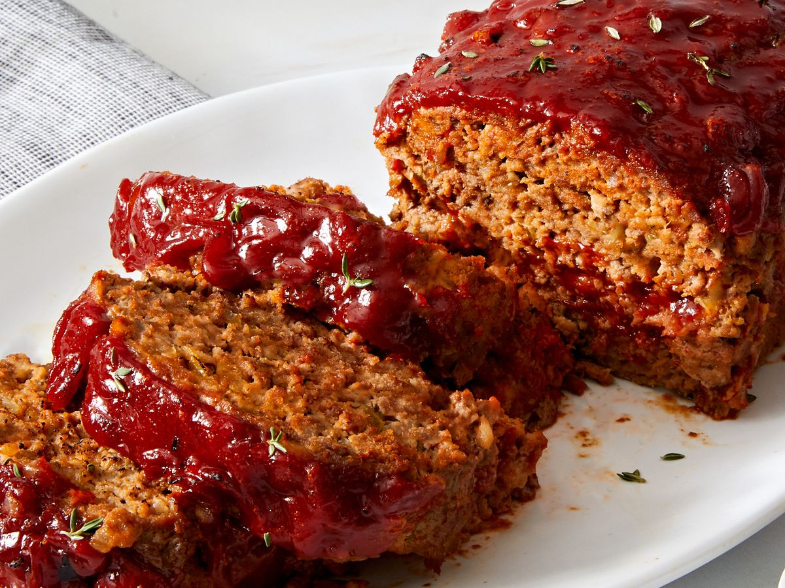

Meatloaf

Description
This is the best meatloaf recipe ever and comes complete with a yummy glaze. It will knock your socks off! My mom never made meatloaf when I was growing up so when I moved out on my own, I started experimenting with different recipes and this is my best creation.
- 1 tablespoon butter
- 1/4 cup minced onion
- 2 cloves garlic, minced
- 1 1/2 teaspoons salt
- 1 1/2 teaspoons freshly ground black pepper
- 2 pounds extra-lean ground beef
- 3 slieces bread, toasted and crumbled
- 7 buttery round crackers, crushed
- 1 egg, lightly beaten
- 3 1/2 tablespoons sour cream
- 1 1/2 tablespoons Worcestershire sauce
- 1 (15 ounce) can tomato sauce, divided
- 1/4 cup milk, or as needed (Optional)
- 3 tablespoons ketchup